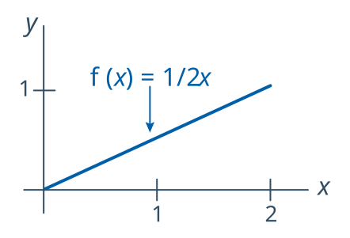

1 Statistik Urutan
Gambaran Umum
Biasanya kita tidak memberikan perhatian khusus pada urutan sekumpulan peubah acak \(X_1, X_2, \ldots, X_n\). Namun, bagaimana jika urutannya kita perhatikan? Misalkan, sebagai contoh, kita perlu mengetahui peluang bahwa nilai terbesar ketiga kurang dari 72. Atau, misalkan kita perlu mengetahui persentil ke-80 dari suatu sampel acak denyut jantung. Dalam kedua kasus tersebut, kita perlu memahami perilaku data setelah diurutkan. Dengan kata lain, kita perlu memahami fungsi kepadatan peluang dari statistik urutan \(Y_1, Y_2, \ldots, Y_n\). Itulah yang akan kita bahas dalam pelajaran ini.
Tujuan
Setelah menyelesaikan pelajaran ini, Anda diharapkan mampu:
- Mengidentifikasi statistik urutan berdasarkan definisinya,
- Menurunkan fungsi kepadatan peluang untuk statistik urutan dengan indeks \(r^{th}\) tersebut, dan
- Menurunkan fungsi distribusi kumulatif untuk statistik urutan dengan indeks \(r^{th}\) tersebut.
1.1 Konsep Dasar
Contoh 1.1 Mari kita memotivasi definisi sekumpulan statistik urutan melalui sebuah contoh sederhana.
Misalkan sebuah sampel acak yang terdiri atas lima ekor tikus menghasilkan bobot berikut (dalam gram):
\[x_1=602 \qquad x_2=781\qquad x_3=709\qquad x_4=742\qquad x_5=633\]
Apa statistik urutan teramati dari kumpulan data ini?
Penyelesaian
Bahkan tanpa mengetahui definisi formal statistik urutan, kita tidak perlu menjadi ilmuwan roket untuk menyadari bahwa data harus disusun dalam urutan numerik menaik. Dengan demikian, statistik urutan yang teramati adalah:
\[y_1=602<y_2=633<y_3=709<y_4=742<y_5=781\] Satu-satunya hal yang mungkin menyulitkan dalam contoh sederhana ini adalah jika dua tikus memiliki bobot yang sama, karena nilai yang sama memang mungkin teramati. Namun, kita akan mengesampingkan peluang terjadinya hal itu dengan membuat asumsi yang berlaku sepanjang pelajaran ini—dan seterusnya. Kita akan mengasumsikan bahwa n pengamatan yang saling bebas berasal dari suatu distribusi kontinu, sehingga peluang bahwa dua pengamatan mana pun bernilai sama adalah nol. Tentu saja, dalam praktiknya nilai yang sama masih mungkin dijumpai. Namun, asumsi bahwa peluang terjadinya nilai yang sama nyaris nol memungkinkan kita mengembangkan teori distribusi statistik urutan yang setidaknya berlaku sebagai hampiran ketika nilai yang sama muncul. Selanjutnya, mari kita definisikan sekumpulan statistik urutan secara formal.
Def. 1.1 (Statistik Urutan) Jika \(X_1, X_2, \cdots, X_n\) merupakan pengamatan dari sampel acak berukuran \(n\) dari suatu distribusi kontinu, kita menetapkan peubah-peubah acak:
\[Y_1<Y_2<\cdots<Y_n\]
menyatakan statistik urutan sampel tersebut, dengan:
\(Y_1\) merupakan nilai terkecil di antara \(X_1, X_2, \cdots, X_n\) tersebut
\(Y_2\) merupakan nilai terkecil kedua di antara \(X_1, X_2, \cdots, X_n\) tersebut
….
\(Y_{n-1}\) merupakan nilai terbesar kedua di antara \(X_1, X_2, \cdots, X_n\) tersebut
\(Y_n\) merupakan nilai terbesar di antara \(X_1, X_2, \cdots, X_n\) tersebut
Sekarang, kita akan secara bertahap mencari fungsi kepadatan peluang untuk setiap anggota dari \(n\) statistik urutan tersebut, yakni statistik urutan dengan indeks \(r^{th}\) yang dilambangkan dengan \(Y_r\). Dengan demikian, kita dapat memahami perilaku statistik urutan dan memakai pengetahuan itu untuk menarik kesimpulan, misalnya tentang mobil tercepat dalam perlombaan atau tikus terberat pada pola makan tertentu. Untuk mencari fungsi kepadatan peluang, kita akan menggunakan teknik fungsi distribusi. Mungkin sudah cukup lama sejak teknik ini terakhir digunakan. Sebagai pengingat, strategi kita adalah terlebih dahulu mencari fungsi distribusi \(G_r(y)\) dari statistik urutan dengan indeks \(r^{th}\) tersebut, lalu mengambil turunannya untuk memperoleh fungsi kepadatan peluang \(g_r(y)\) bagi statistik urutan dengan indeks \(r^{th}\) tersebut. Namun, pembahasan kita sudah sedikit melompat ke depan. Itulah yang akan kita lakukan pada halaman berikutnya. Agar pembahasan tersebut lebih mudah dipahami, mari kita lihat dahulu sebuah contoh konkret di sini.
Contoh 1.2 
{kind=link}
\[f(x)=\dfrac{1}{2}x\]
untuk \(0<x<2\).
Berapakah peluang bahwa statistik urutan terbesar kedua, yaitu \(Y_5\), bernilai kurang dari 1? Dengan kata lain, berapakah \(P(Y_5<1)\)?
Penyelesaian
Kunci untuk menemukan peluang yang diminta adalah menyadari bahwa satu-satunya cara statistik urutan kelima, \(Y_5\), bernilai kurang dari satu adalah jika sedikitnya 5 dari peubah acak \(X_1, X_2, X_3, X_4, X_5, X_6\) bernilai kurang dari satu. Untuk mempermudah, misalkan lima nilai teramati pertama \(x_1, x_2, x_3, x_4, x_5\) bernilai kurang dari satu, tetapi nilai keenam \(x_6\) tidak demikian. Dalam hal ini, statistik urutan kelima yang teramati, \(y_5\), akan bernilai kurang dari satu:
Gambar 1.1 Statistik urutan kelima yang teramati, \(y_5\), juga akan bernilai kurang dari satu jika keenam nilai teramati \(x_1, x_2, x_3, x_4, x_5, x_6\) bernilai kurang dari satu:
Gambar 1.2 Statistik urutan kelima yang teramati, \(y_5\), tidak akan bernilai kurang dari satu jika empat nilai teramati pertama \(x_1, x_2, x_3, x_4\) bernilai kurang dari satu, tetapi nilai kelima \(x_5\) dan nilai keenam \(x_6\) tidak demikian:
Gambar 1.3 Sekali lagi, satu-satunya cara statistik urutan kelima, \(Y_5\), bernilai kurang dari satu adalah jika 5 atau 6—yakni, sedikitnya 5—dari peubah acak \(X_1, X_2, X_3, X_4, X_5, \text{ and }X_6\) bernilai kurang dari satu. Untuk mempermudah, kita hanya meninjau lima atau enam peubah acak pertama. Namun, sebenarnya sembarang lima atau enam peubah acak yang bernilai kurang dari satu akan menghasilkan keadaan yang sama. Kita hanya perlu melakukan “pemilihan” untuk menghitung banyaknya cara memperoleh sembarang lima atau enam peubah acak yang bernilai kurang dari satu.
Jika kita perhatikan, ini merupakan perhitungan peluang binomial. Jika kejadian \(\{X_i<1\}\), \(i=1, 2, \cdots, 6\) dianggap sebagai “keberhasilan,” dan kita misalkan \(Z\) = banyaknya keberhasilan dalam enam percobaan yang saling bebas, maka \(Z\) merupakan peubah acak binomial dengan \(n=6\) dan \(p=0.25\):
Menentukan peluang bahwa statistik urutan kelima, \(Y_5\), kurang dari satu dapat direduksi menjadi perhitungan binomial. Yaitu:
Kecilnya peluang yang dihitung tersebut semestinya masuk akal jika kita memperhatikan fungsi kepadatan peluang yang diberikan untuk \(X\). Lagi pula, setiap \(X_i\) lebih berpeluang berada di atas daripada di bawah satu. Karena itu, tidak lazim jika sebanyak lima atau enam peubah yang dilambangkan \(X\), semuanya bernilai kurang dari satu.
Apa fungsi distribusi kumulatif, \(G_5(y)\), dari statistik urutan kelima \(Y_5\)?
Penyelesaian
Mengingat kembali definisi fungsi distribusi kumulatif, \(G_5(y)\) didefinisikan sebagai peluang bahwa statistik urutan kelima \(Y_5\) kurang dari suatu nilai \(y\). Yaitu:
\[G_5(y)=P(Y_5 < y)\]
Dalam perhitungan di atas, kita telah menentukan peluang bahwa statistik urutan kelima \(Y_5\) kurang dari nilai tertentu, yaitu 1. Kita hanya perlu menggeneralisasi perhitungan tersebut agar berlaku untuk sembarang nilai \(y\). Jika kejadian \(\{X_i<y\}\), \(i=1, 2, \cdots, 6\) dianggap sebagai “keberhasilan,” dan kita misalkan \(Z\) = banyaknya keberhasilan dalam enam percobaan yang saling bebas, maka \(Z\) merupakan peubah acak binomial dengan \(n=6\) dan peluang keberhasilan:
\[P(X_i\le y)=\dfrac{1}{2}\int_{0}^{y}x dx=\dfrac{1}{2}\left[\dfrac{x^2}{2}\right]_{x=0}^{x=y}=\dfrac{1}{2}\left(\dfrac{y^2}{2}-0\right)=\dfrac{y^2}{4}\]
Oleh karena itu, fungsi distribusi kumulatif \(G_5(y)\) dari statistik urutan kelima \(Y_5\) adalah:
\[G_5(y)=P(Y_5 < y)=P(Z=5)+P(Z=6)=\binom{6}{5}\left(\dfrac{y^2}{4}\right)^5\left(1-\dfrac{y^2}{4}\right)+\left(\dfrac{y^2}{4}\right)^6\]
untuk \(0<y<2\).
Apa fungsi kepadatan peluang, \(g_5(y)\), dari statistik urutan kelima \(Y_5\)?
Penyelesaian
Untuk menentukan fungsi kepadatan peluang \(g_{5}(y)\) kita cukup mengambil turunan fungsi distribusi \(G_5(y)\) terhadap \(y\). Dengan demikian, diperoleh:
Dengan memperhatikan bahwa:
\[\binom{6}{5}=6 \text{ and } \binom{6}{5}\times5=\dfrac{6!}{5!1!}\times5=\dfrac{6!}{4!1!}\]
kita melihat bahwa suku tengah dapat disederhanakan, sedangkan suku pertama merupakan negatif dari suku ketiga; karena itu, keduanya saling meniadakan:
Oleh karena itu, fungsi kepadatan peluang statistik urutan kelima \(Y_5\) adalah:
\[g_5(y)=\dfrac{6!}{4!1!}\left(1-\dfrac{y^2}{4}\right)\left(\dfrac{y^2}{4}\right)^4\left(\dfrac{1}{2}y\right)\]
untuk \(0<y<2\). Ketika kita menggeneralisasi hasil ini pada halaman berikutnya, perlu dicatat bahwa karena fungsi kepadatan dan fungsi distribusi setiap \(X\) masing-masing adalah:
\[f(x)=\dfrac{1}{2}x \text{ and } F(x)=\dfrac{x^2}{4}\]
secara berurutan, ketika \(0<x<2\), kita juga dapat menulis fungsi kepadatan peluang statistik urutan kelima \(Y_5\) sebagai:
\[g_5(y)=\dfrac{6!}{4!1!}\left[F(y)\right]^4\left[1-F(y)\right]f(y)\]
Selesai!
Baik, sekarang mari kita lanjutkan ke kasus yang lebih umum, yaitu menentukan fungsi kepadatan peluang untuk statistik urutan dengan indeks \(r^{th}\) tersebut.
{kind=link}
{kind=link}
{kind=link}
1.2 Fungsi Kepadatan Peluang
Perhitungan pada halaman sebelumnya untuk menentukan fungsi kepadatan peluang suatu statistik urutan tertentu, yakni statistik urutan kelima dari sekumpulan enam peubah acak, akan membantu ketika kita menentukan fungsi kepadatan peluang sembarang statistik urutan, yaitu statistik urutan dengan indeks \(r^{th}\) tersebut.
Contoh 1.3 Misalkan \(Y_1<Y_2<Y_3<Y_4<Y_5<Y_6\) merupakan statistik urutan yang berkaitan dengan \(n=6\) pengamatan yang saling bebas, masing-masing berasal dari distribusi dengan fungsi kepadatan peluang:
\[f(x)=\dfrac{1}{2}x\]
untuk \(0<x<2\). Apa fungsi kepadatan peluang dari statistik urutan pertama, keempat, dan keenam?
Penyelesaian
Ketika mengerjakan contoh ini pada halaman sebelumnya, kita telah menunjukkan bahwa fungsi distribusi kumulatif dari \(X\) adalah:
\[F(x)=\dfrac{x^2}{4}\]
untuk \(0<x<2\). Oleh karena itu, dengan menerapkan teorema di atas untuk \(n=6\) dan \(r=1\), fungsi kepadatan peluang (PDF) dari \(Y_1\) adalah:
\[g_1(y)=\dfrac{6!}{0!(6-1)!}\left[\dfrac{y^2}{4}\right]^{1-1}\left[1-\dfrac{y^2}{4}\right]^{6-1}\left(\dfrac{1}{2}y\right)\]
untuk \(0<y<2\), yang dapat disederhanakan menjadi:
\[g_1(y)=3y\left(1-\dfrac{y^2}{4}\right)^{5}\]
Dengan menerapkan teorema untuk \(n=6\) dan \(r=4\), fungsi kepadatan peluang (PDF) dari \(Y_4\) adalah:
\[g_4(y)=\dfrac{6!}{3!(6-4)!}\left[\dfrac{y^2}{4}\right]^{4-1}\left[1-\dfrac{y^2}{4}\right]^{6-4}\left(\dfrac{1}{2}y\right)\]
untuk \(0<y<2\), yang dapat disederhanakan menjadi:
\[g_4(y)=\dfrac{15}{32}y^7\left(1-\dfrac{y^2}{4}\right)^{2}\]
Dengan menerapkan teorema untuk \(n=6\) dan \(r=6\), fungsi kepadatan peluang (PDF) dari \(Y_6\) adalah:
\[g_6(y)=\dfrac{6!}{5!(6-6)!}\left[\dfrac{y^2}{4}\right]^{6-1}\left[1-\dfrac{y^2}{4}\right]^{6-6}\left(\dfrac{1}{2}y\right)\]
untuk \(0<y<2\), yang dapat disederhanakan menjadi:
\[g_6(y)=\dfrac{3}{1024}y^{11}\]
Untungnya, ketika ketiga fungsi tersebut kita gambarkan pada satu plot:
{kind=link}
kita memperoleh hasil yang masuk akal secara intuitif: ketika peringkat statistik urutan meningkat, PDF tersebut “bergeser ke kanan” pada selang dukungan.
1.3 Ringkasan
Dalam pelajaran ini, kita mengeksplorasi gagasan baru yang awalnya mungkin terasa agak berbeda—apa yang terjadi jika urutan data benar-benar penting bagi kita? Alih-alih sekadar melihat sekumpulan nilai dari sampel acak, kita mengajukan pertanyaan seperti: berapa peluang nilai terkecil ketiga berada di bawah suatu angka? Atau, seperti apa distribusi pengamatan terbesar? Pertanyaan-pertanyaan seperti ini membawa kita ke ranah statistik urutan.
Kita mempelajari cara mendefinisikan dan mengidentifikasi statistik urutan, seperti nilai terkecil, terbesar, atau nilai terkecil ke-r dalam suatu sampel. Selanjutnya, kita mempelajari cara menentukan fungsi distribusi kumulatif (CDF) dan fungsi kepadatan peluang (PDF) dari statistik urutan tertentu. Menariknya, fungsi-fungsi tersebut dapat diturunkan dengan alat yang sudah kita kenal—seperti distribusi binomial dan kalkulus. Anda telah melihat bahwa PDF statistik urutan bergeser sesuai peringkat yang ditinjau (misalnya, yang terkecil dibandingkan yang terbesar), sehingga membantu menjelaskan pola dalam data dunia nyata, seperti kejadian cuaca ekstrem atau nilai ujian.
Pelajaran ini menyiapkan kita untuk menggunakan statistik urutan dalam masalah inferensi dan penerapan nyata—setiap kali yang penting bukan hanya datanya, melainkan juga bagaimana data tersebut diurutkan.
Pokok-Pokok Penting:
- Jika \(X_1, X_2, \ldots, X_n\), yang merupakan sampel acak sederhana berukuran \(n\), diurutkan dari nilai terkecil hingga nilai terbesar, statistik urutannya, yang dinotasikan dengan \(Y_1, Y_2, \ldots, Y_n\) memenuhi sifat bahwa \(Y_i\) merupakan pengamatan berperingkat \(i^{th}\) dalam urutan menaik di antara \(X_1, X_2,\ldots, X_n\) dan \(Y_1<Y_2<\ldots<Y_n\)
- Fungsi kepadatan peluang statistik urutan dengan indeks \(r^{th}\) adalah: \(g_r(y)=\frac{n!}{(n-r)!(r-1)!} \left[F(y)\right]^{r-1}\left[1-F(y)\right]^{n-r}f(y)\)